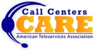

CALL CENTERS CARE (CCC) 
CALL CENTERS CARE (CCC) represents the philanthropic initiatives organized by the American Teleservices Association (ATA) and was originated by the Arizona Chapter, largely through the involvement of Synergy Solutions. This initiative was adopted by the ATA to unite members of the call center industry, on a national level, to make available various organized philanthropic efforts to further demonstrate that our industry contributes in a very personal way to local and national causes. Presently, twelve ATA local chapters are active contributors to various causes in their communities under the CALL CENTER CARES umbrella.
In addition to Call Centers Care activity on a local basis, nationally organized activities for the CCC include a coast to coast blood drive as well as Habitat for Humanity events that coincide with the ATA Annual Convention and Expo.
CALL CENTERS CARE – TEAM ARIZONA
The Arizona Chapter of the ATA organized the CALL CENTERS CARE team (CCC) in 2006 as a vehicle to conduct philanthropy in the community.
TEAM ARIZONA’s initiatives are unprecedented in the history of the ATA. We have raised thousands of dollars and turned the public eye to see the positive side of the call center industry and our connection to our communities. It also is a vehicle through which our employees can get involved and make a difference. The team has created an emotional bond and positive connection among our employees, our industry, and our community. TEAM ARIZONA continues to focus on supporting needy organizations that are often overshadowed by more highly publicized events.
In 2008, the CCC – TEAM ARIZONA was the highest grossing fundraising team in our 5K Walk/Run to support victims of domestic violence with over 120 representatives participating in the philanthropic activity. This was TEAM ARIZONA’s third year participating in the wonderful event. TEAM ARIZONA organized its efforts to continue the tradition and participated in the 2009 5K Walk/5k Run/10k Run in Phoenix, AZ and for the second year in a row was the highest grossing fundraising team.
From 2007 to 2011, the CCC – TEAM ARIZONA also coordinated a community-wide toy collection to benefit the pediatric patients of the Maricopa County Medical Center. TEAM ARIZONA delivered several truckloads full of toys to the neediest of patients during the holidays and truly demonstrated that members of the Call Center industry really do care.
In 2009-2011, the CCC – TEAM ARIZONA conducted a Diaper & Underwear Drive to help families seeking shelter at the Sojourner Center in Phoenix, Arizona. TEAM ARIZONA helped collect more than 2000 undergarments and diapers each year for the Sojourner Center.
Team Synovation
In addition to Synergy’s support of CALL CENTERS CARE initiatives, at each of our call center locations throughout the US, team members join together in the true spirit of Synovation (The Power of Team + Innovation) to organize and raise funds for local charities and to support fellow employees in times of need. Synergy’s Synovation Teams have donated time and resources in support of various charities and organizations and have collected thousands of dollars to provide relief to catastrophe victims. Local fundraising has occurred for school supplies, local shelters, food drives, building playgrounds and collecting clothing, as well as organized fund raisers to help fellow employees who have gone through extreme hardship including illness, death of a loved one, fires, flood and other personal tragedy.
On a national level, Synergy has organized support for Tsunami Victims, Hurricane Katrina victims, Haiti disaster relief and our ongoing partnership with notmykid.org where our commitment of resources and funding helps to provide the operational support needed for this non profit to continue its mission of providing behavioral risk education to parents to address the problems of drug and alcohol abuse, eating disorders and suicide amongst teens and adolescents.